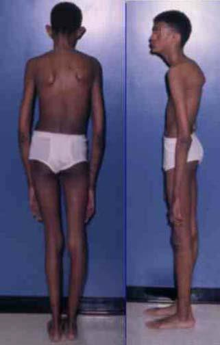

What You Will Learn
After reading this note, you should be able to...
- This content is not available yet.
Read More 🍪
As tall stature becomes more common and socially acceptable, referrals, especially for tall girls, seem to be decreasing. Referrals often arise from parental concerns regarding the child's current or future height. Understanding the pathogenesis, clinical and biochemical associations, and potential treatments of tall stature is important for proper evaluation and management.
Definition of Tall Stature
Tall stature is defined as a height above the 97th percentile for age and sex.
In the Fetus:
- Familial: Genetic predisposition to taller height.
- Infant of Diabetic Mother (IDM): Higher birth weight and length due to maternal diabetes.
- Soto’s Syndrome: Genetic disorder characterized by overgrowth and tall stature.
- Beckwith-Wiedemann Syndrome: Overgrowth syndrome with tall stature and other features.
- Hypothyroidism: Rarely, fetal hypothyroidism can cause increased growth.
In Childhood:
- Familial: Inherited tendency for taller height.
- Klinefelter’s Syndrome: Genetic condition in males with an extra X chromosome leading to taller stature.
- Soto’s Syndrome: Continued overgrowth in childhood.
- Fragile X Syndrome: Genetic condition associated with taller stature.
- Beckwith-Wiedemann Syndrome (BWS): Persistent overgrowth from infancy.
- XYY Syndrome: Genetic condition in males associated with increased height.
- Obesity: Can cause increased height due to excess growth hormone.
- Homocystinuria: Metabolic disorder associated with tall stature.
- Growth Hormone Excess: Excess GH leading to increased height.
- Hyperthyroidism: Increased thyroid hormones can lead to taller stature.
- Precocious Puberty: Early onset of puberty leading to accelerated growth.
- Marfan Syndrome: Genetic disorder causing tall stature and other features.
In Adolescents/Adults:
- Familial: Inherited trait of taller stature.
- Marfan Syndrome: Genetic condition causing tall stature and other systemic effects.
- Homocystinuria: Persistent tall stature due to metabolic disorder.
- Klinefelter Syndrome: Continued taller stature in adulthood.
- Soto’s Syndrome: Persistent overgrowth into adolescence and adulthood.
- Measurement and History:
- Height: Measure current height and compare to growth charts.
- Weight: Record weight to assess growth patterns.
- Height Velocity: Measure growth rate over time.
- Heights of Parents and Siblings: Determine familial patterns of height.
- Birth Weight, Length, and Head Circumference: Review for any growth abnormalities from birth.
- History of Previous Growth: Evaluate growth patterns from infancy to present.
- Past Medical History: Identify any relevant medical conditions or treatments.
- Intellectual Development: Assess developmental milestones and cognitive function.
- Examination:
- Dysmorphic Features: Check for any physical features that might suggest a genetic syndrome.
- Systematic Examination: Conduct a thorough physical examination to identify any additional signs or symptoms.
- Pubertal Development Staging: Evaluate stage of sexual maturation and measure testicular volume if applicable.
- Diagnostic Tools:
- Bone Age Assessment: Use X-rays to determine bone maturation and compare with chronological age.
- Final Height Prediction: Utilize growth charts and predictors based on current height, growth velocity, and parental height.

Tall Stature: Arm Span > Height; Kyphoscoliosis
×

Tall Stature: Arm Span > Height; Kyphoscoliosis
- Karyotype: To identify any chromosomal abnormalities that might contribute to tall stature.
- T4, TSH: To evaluate thyroid function and rule out hyperthyroidism.
- IGF-I: To assess for growth hormone excess or deficiency, as IGF-I levels are influenced by growth hormone activity.
- Bone Age and Final Height Prediction: To compare the child’s bone age with chronological age and predict potential final height.
Investigations for Suspected GH-Secreting Pituitary Adenoma
- Glucose Tolerance Test for GH Secretion: To assess for inappropriate growth hormone secretion. In a normal response, glucose administration should suppress GH secretion.
- MRI Scan of Pituitary: To visualize the pituitary gland and identify any tumors or abnormalities.
- CT Scan: May be used if MRI is not available or suitable, to provide additional imaging of the pituitary region.
- Indications for Treatment:
- Boys with a predicted adult height (PAH) greater than 198 cm.
- Girls with a PAH greater than 180 cm.
- Treatment Options:
- Hormonal Therapy:
- Oestrogen (for girls) and Testosterone (for boys) to induce epiphyseal closure and limit further growth.
- For Pituitary Adenoma:
- Surgery: To remove the tumor and reduce GH secretion.
- Radiotherapy: To target and destroy residual tumor cells after surgery or if surgery is not feasible.
- Octreotide: A somatostatin analogue that inhibits GH release and can help manage GH-secreting tumors.
- Hormonal Therapy:
Practice Questions
Check how well you grasp the concepts by answering the following questions...
- This content is not available yet.
Read More 🍪
Contributors
Jane Smith
She is not a real contributor.
John Doe
He is not a real contributor.
Send your comments, corrections, explanations/clarifications and requests/suggestions